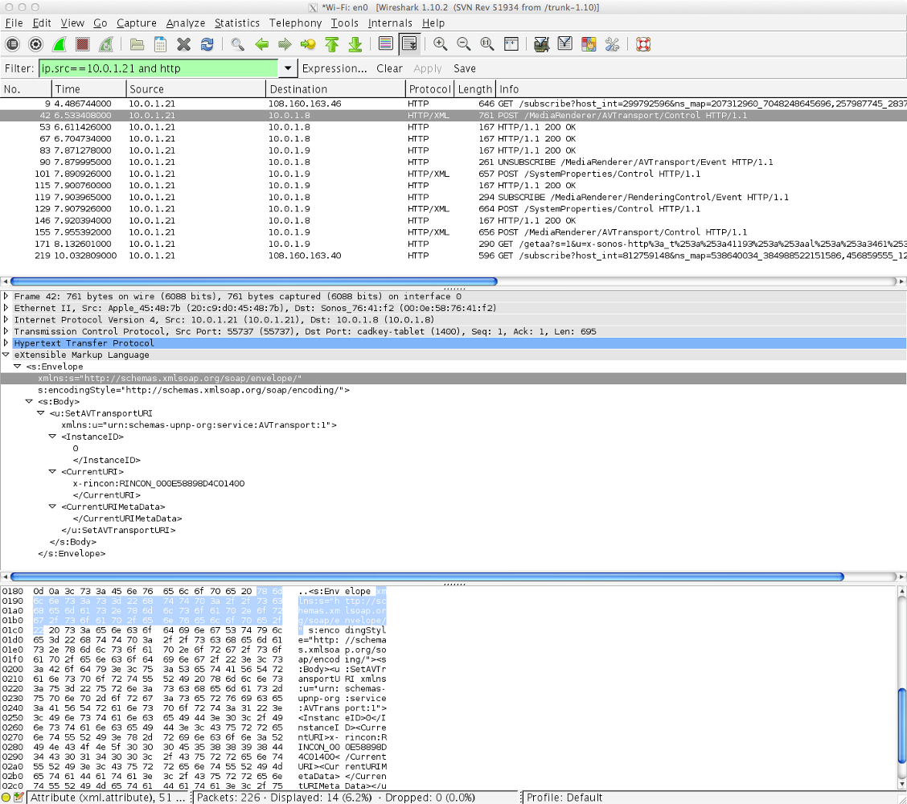
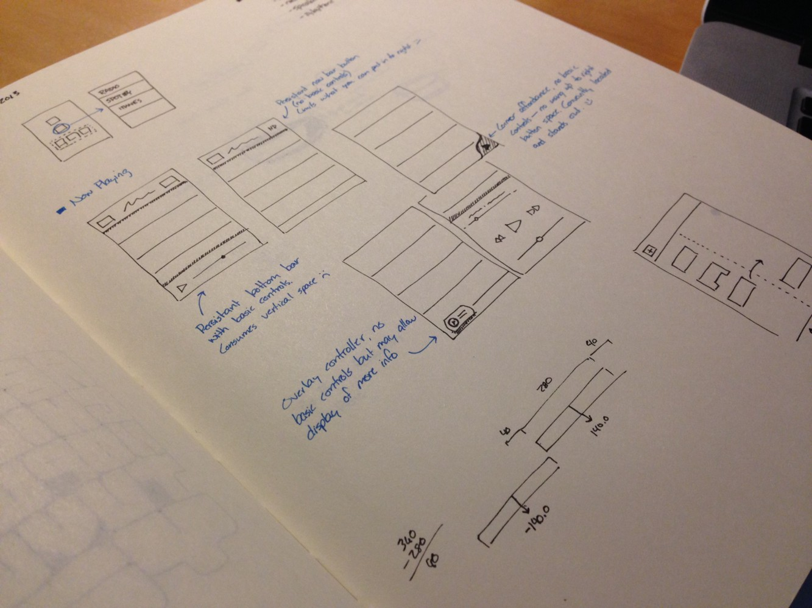
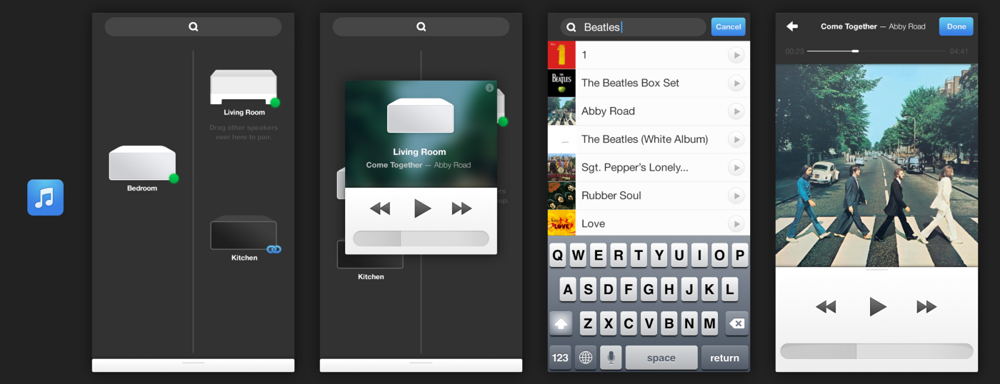
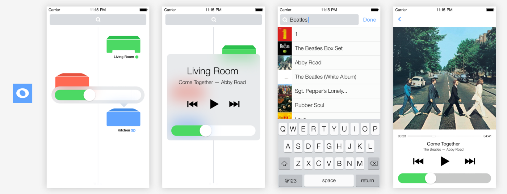
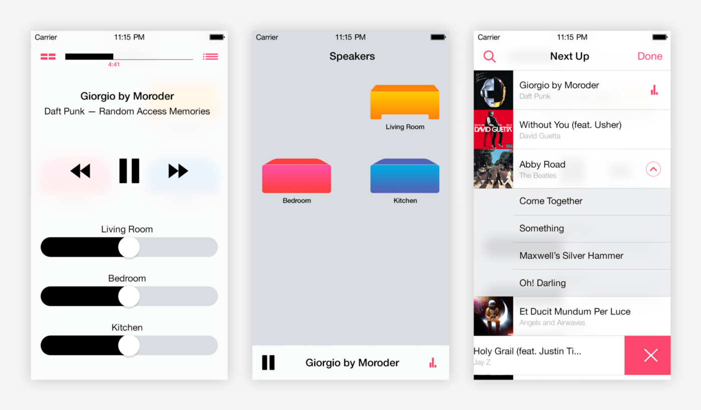
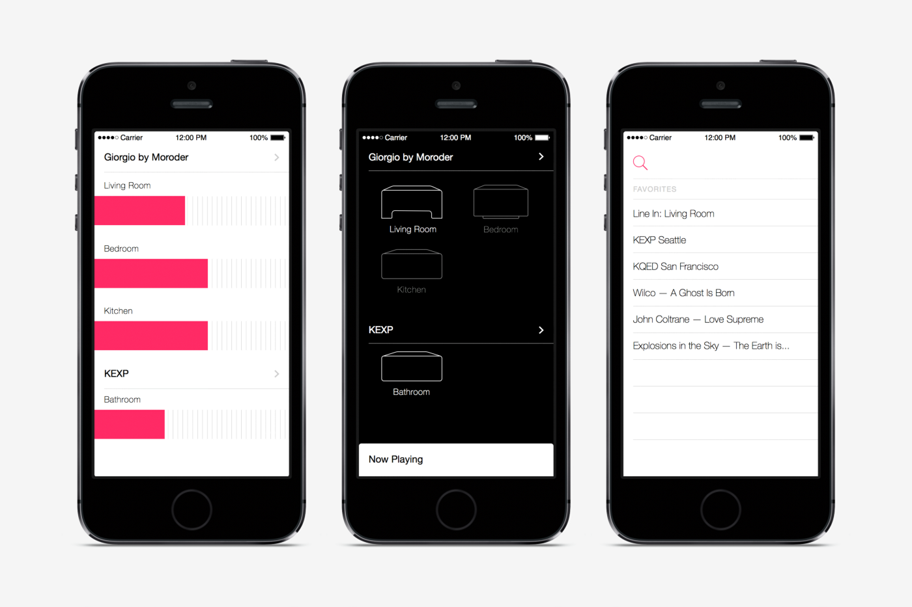
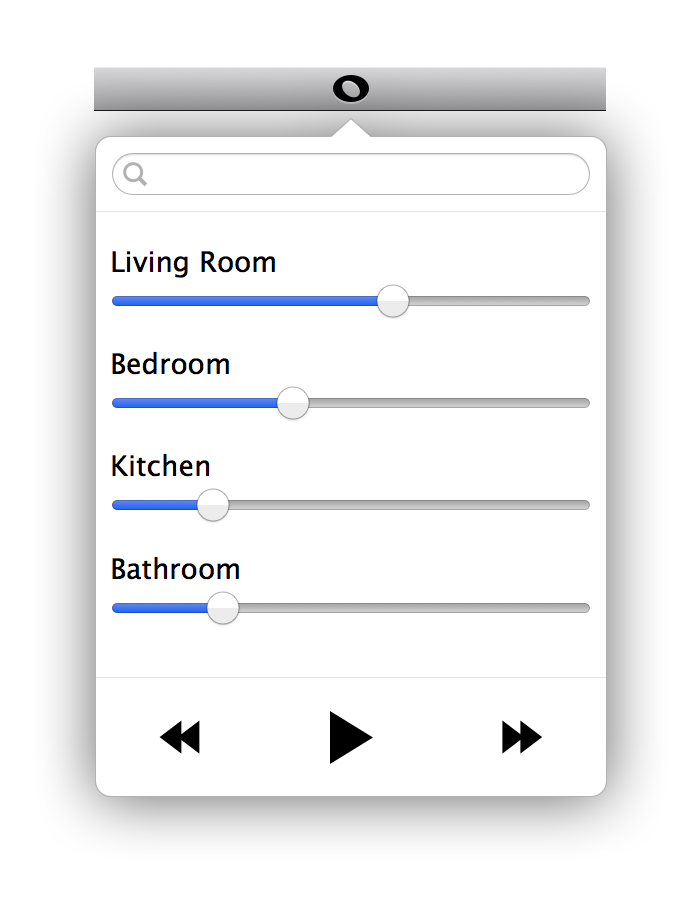
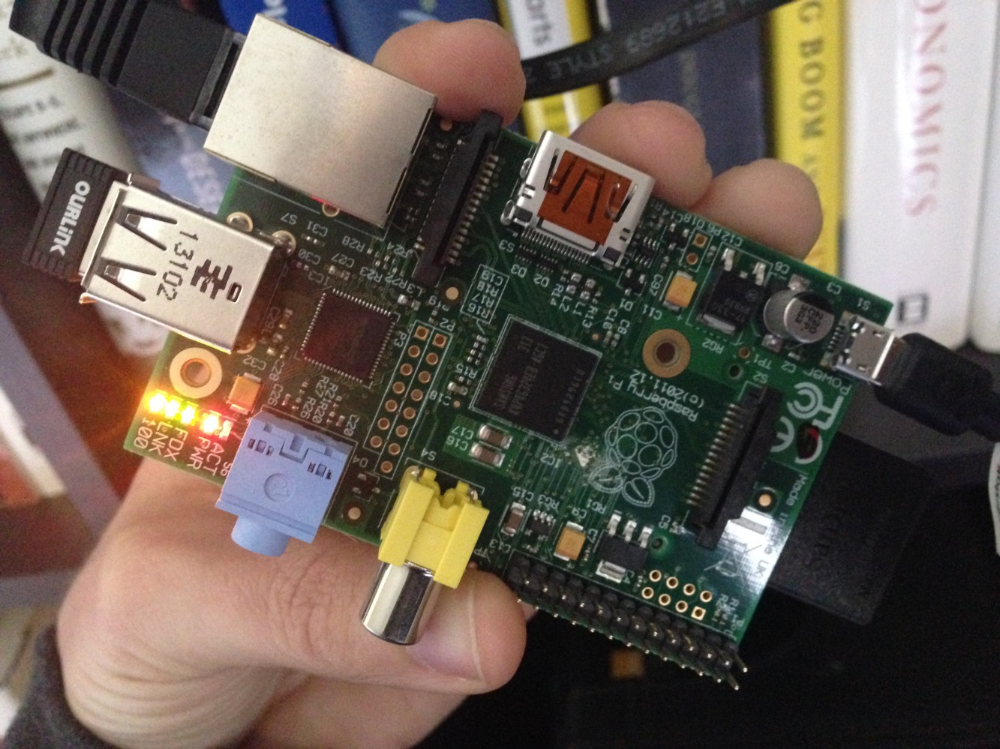

Hacking Sonos — In my spare time I’ve been writing an app that replaces the Sonos app used to control multiple speakers in one’s home. It’s been a little challenging so I thought I’d share how I got where I am. You can check out most of the code on Github. I’ll be pushing more stuff when it’s ready.
Finding an API
First off I needed to understand how the existing app was communicating with speakers. Sonos doesn’t really have an official API so I had to do some digging. Wireshark is the perfect tool.

A Wireshark session where I’m trying to figure out what data Sonos is sending to pair speakers with other speakers.
Wireshark lets you watch all the traffic on a network, allowing you to see what requests are being passed between the speakers and the app. This established a base understanding of what was needed to build a new app.
Making a better experience
What bothered me most about the current app was it didn’t give me what I needed as quickly as I needed it—both in terms of speed and interactions. Most of the time all I wanted to immediately do was change the volume and pair up speakers so they would be in sync (I also really wanted to make my living room play out of the Line-In input quickly without any fuss). So I sketched a few things out:

Obligatory sketchbook photo to make it appear as though this is where I started.
I went through about six variations. iOS 7 shipped in the middle of all this which got me thinking differently, both on the visual and interaction side.

Here you could drag speakers to the right column which would make them play music together. First speaker in was considered the “coordinator” and every subsequent one would play it’s music.

iOS 7 came out so I had some fun re-skinning things.

Tried to simplify things further and put more emphasis on volume control which turns out to be more important than speaker arrangement.

Simplified the visuals even further taking some cues from Voice Memos and Compass app. I liked how streamlined they felt—really pushes all fluff aside and zeros in on functionality and information.
Each mocked version above was built to some degree. You can see all the iterations on Github. A lot of this is still in development and I’ll try to push improvements when they’re ready.
What about desktop?
Then I realized I wanted more than just an app on my phone, sometimes I’d be on my laptop and want to quickly adjust volume. So I decided to build a menu bar app. Volume is all I really needed here so I didn’t implement anything else.

Controlling Sonos from the Mac OS menu bar. Only real necessity here is volume and play/pause. At some point I’ll add search so you can find things to play.
This was a lot easier once I abstracted out all the bits needed to control Sonos into a little library called SonosKit.
Can it be smarter?
The above was all nice but I began to notice another annoyance—I didn’t like having to turn my speakers off when I left my apartment. I had already figured out how to turn all my lights off with IFTTT so why not make this work with Sonos. Using a Raspberry Pi and a Sonos command-line interface I hooked up a very basic home REST API where I could detect my phone leaving a location using a geofence.

Raspberry Pi model B plugged into an Airport router via Eithernet. This puppy is always on and has a port mapped to the outside world for external access.
Now when I leave it makes a request to my home and the music turns off.
Next up
The next thing I’m working on (aside from finishing some of the above stuff) is a way to determine an optimal state without having to interact with anything. By learning more about my listening habits I could automatically start playing one of three podcasts before going to bed or automatically start playing jazz on the weekends. All things I manually do on a pretty regular basis. Then I’m curious if I can use music to effect my mood—after a stressful day (i.e. lots of meetings on my calendar) I could let Sonos know and maybe start playing some chill music when I walk into my apartment.